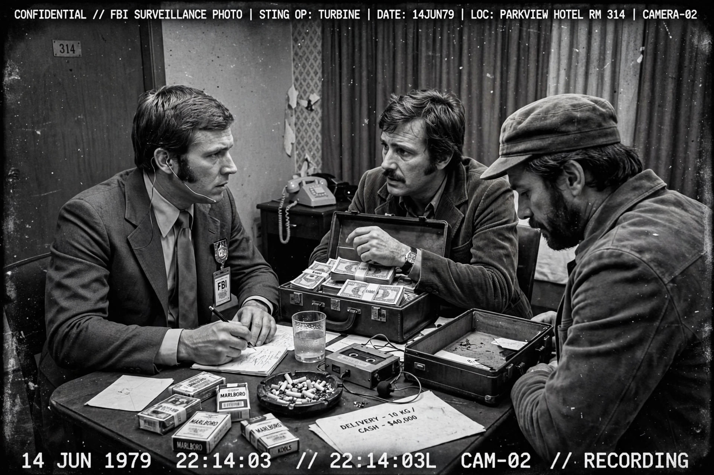

ABSCAM

| Type | FBI sting operation |
|---|---|
| Dates | 1978–1980 (publicly revealed February 1980) |
| Target | Political corruption among U.S. public officials |
| Convicted | 1 U.S. Senator, 5 U.S. Representatives, and other officials |
ABSCAM was an FBI sting operation in the late 1970s and early 1980s that led to the convictions of seven members of the United States Congress and several other public officials for bribery and conspiracy. The codename came from "Arab scam", after the fictitious sheikhs at the centre of the operation.
The operation
Beginning in 1978, the FBI, with the help of convicted con artist Melvin Weinberg, created a fake company, Abdul Enterprises, whose representatives claimed to act for wealthy Arab sheikhs seeking investment opportunities and immigration help in the United States. Undercover agents offered bribes to officials in exchange for political favours, including help with casino licensing in Atlantic City and asylum for the sheikhs. The meetings were secretly videotaped.
Convictions
When the operation was revealed in February 1980, it produced a national scandal. Senator Harrison A. Williams Jr. of New Jersey and Representatives John Jenrette, Richard Kelly, Michael "Ozzie" Myers, Frank Thompson and John M. Murphy were among those convicted; Myers became the first member of Congress expelled from the House since the Civil War era. Several New Jersey officials, including the mayor of Camden, Angelo Errichetti, were also convicted.
Controversy
ABSCAM ignited debate over entrapment and the ethics of undercover "sting" tactics aimed at elected officials. Defence claims of entrapment largely failed in court, but Congress held hearings and the Justice Department adopted new guidelines governing undercover operations. The story was loosely adapted into the 2013 film American Hustle.
See also: Federal Bureau of Investigation · Sting operation